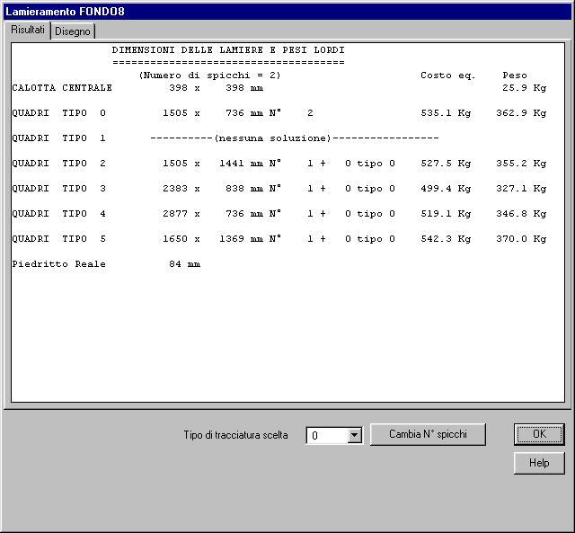

Per spicchiatura si intende un insieme di rettangoli di lamiera che contengono ciascuno uno o più spicchi (settore di corona circolare).
Gli spicchi servono per il lamieramento di:
Il programma propone una spcchiatura ottimizzata, ricercando il costo minimo della spicchiatura al variare del numero di spicchi e del tipo.
Il costo viene valutato dalla somma del peso dei rettangoli costituenti la spicchiatura e del peso delle saldature , mltiplicato quest'ultimo per il fattore di costo delle saldature.